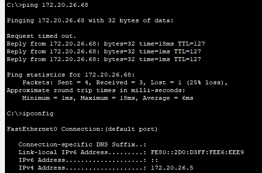

E4 - Roteamento Inter-VLAN e Conectividade¶
Data de Entrega: 12/11 (Quarta-feira)
Critério Principal: Conectividade Total — o roteamento deve ser transparente da LAN para o backbone. PCs devem comunicar entre VLANs e com a Internet.
Prática no Packet Tracer¶
Parte 1: Configurando o Roteamento Externo (Rota Padrão)¶
O objetivo desta etapa é ensinar ao roteador R-CIN o que fazer com qualquer tráfego que não seja destinado a um dos laboratórios internos (VLANs 10-50). Em outras palavras, vamos criar o caminho para a "internet", que neste projeto é representada pela RNP.
Para fazer isso de forma limpa, sem adicionar outros equipamentos à topologia, usaremos uma Interface de Loopback. Pense nela como uma interface de rede virtual, sempre ativa, que existe dentro do próprio roteador — perfeita para simular um destino externo.
Requisito Obrigatório¶
O destino que representa a RNP deve ser obrigatoriamente o endereço IP 200.160.7.186.
Etapa A: Simular o Destino da RNP¶
Primeiro, é preciso criar o ponto final virtual da conexão.
interface Loopback<número>— cria uma interface de rede virtual. É prática comum usar o número0(ex:Loopback0).ip address <endereço_ip> <máscara>— atribui um endereço IP à interface. Para a Loopback, use o endereço obrigatório da RNP.
Dica Importante
Como 200.160.7.186 representa um único servidor e não uma rede, a máscara de sub-rede mais apropriada é 255.255.255.255 (uma máscara /32).
description <texto_descritivo>— adiciona um comentário à interface. Excelente prática de documentação para lembrar o que aquela interface faz (ex:Simulacao_Conexao_RNP).
Etapa B: Criar a Rota Padrão¶
Agora, a regra que diz: "se você não conhece o destino, envie o tráfego por este caminho".
ip route 0.0.0.0 0.0.0.0 <interface_de_saída>— cria uma rota estática.0.0.0.0 0.0.0.0: esta combinação especial significa "qualquer rede com qualquer máscara" — é a definição de uma rota padrão.<interface_de_saída>: para onde o tráfego deve ser enviado. Neste caso, a interface de Loopback criada na Etapa A.
Testes de Conectividade¶
Agora vem a parte mais importante: provar que tudo funciona.
Teste 1: Obter IP via DHCP¶
- Abra um PC em cada laboratório.
- Vá em Desktop → IP Configuration.
- Selecione DHCP.
- Aguarde alguns segundos.
Resultado esperado:
- O PC deve receber um IP da sub-rede correta.
- O gateway deve ser o IP configurado na sub-interface.
- O DNS deve ser
8.8.8.8.
Exemplo para PC no Lab 1:
- IP Address:
172.20.1.2(ou outro IP disponível da sub-rede) - Subnet Mask:
255.255.255.192 - Default Gateway:
172.20.1.1 - DNS Server:
8.8.8.8
Teste 2: Ping Intra-VLAN¶
Objetivo: verificar a comunicação dentro da mesma VLAN.
De um PC no Lab 1, faça ping para outro PC no Lab 1:
Resultado esperado: Reply from 172.20.X.10.
Teste 3: Ping para o Gateway¶
Objetivo: verificar que o PC consegue alcançar seu gateway.
Resultado esperado: Reply from 172.20.X.1.
Teste 4: Ping Inter-VLAN (crucial)¶
Objetivo: provar que o roteamento Inter-VLAN funciona.
De um PC no Lab 1 (VLAN 10), faça ping para um PC no Lab 2 (VLAN 20):
Resultado esperado: Reply from 172.20.X.70.
Observação
O primeiro ping pode falhar (timeout) devido ao processo ARP. Os pings seguintes devem ter sucesso.
Se não funcionar, verifique:
- O DHCP foi configurado nos dois PCs da conexão?
- As sub-interfaces estão criadas e com os IPs corretos?
- A interface física Gi0/0 está ativa (
no shutdown)? - As portas trunk estão configuradas corretamente?
Teste 5: Ping Externo (RNP)¶
Objetivo: verificar a conectividade externa via rota padrão.
Resultado esperado: Reply from 200.160.7.186 — o PC consegue alcançar a RNP/Internet.
Teste 6: Traceroute (evidência visual)¶
Objetivo: mostrar o caminho que os pacotes percorrem.
De um PC no Lab 1, rastreie o caminho até um PC no Lab 2:
Resultado esperado:
Tracing route to 172.20.X.70 over a maximum of 30 hops:
1 <1 ms 172.20.X.1 (Gateway da VLAN GRAD 1)
2 <1 ms 172.20.X.70 (PC de destino na VLAN GRAD 2)
Trace complete.
Importante
Capture a tela deste traceroute — é a melhor evidência de que o roteamento Inter-VLAN está funcionando.
Teste 7: Traceroute Externo¶
Objetivo: mostrar o caminho que os pacotes percorrem até o destino externo.
De um PC no Lab 1, rastreie o caminho até o endereço externo:
Resultado esperado:
Tracing route to 200.160.7.186 over a maximum of 30 hops:
1 <1 ms 172.20.X.1 (Gateway da VLAN GRAD 1)
2 <1 ms 200.167.7.186 (PC de destino externo)
Trace complete.
O único endereço externo configurado é 200.160.7.186, então testar outro IP além desse não vai funcionar — esse endereço não consegue simular a internet inteira e buscar um IP aleatório.
Documentação para o Relatório¶
Evidências de Conectividade (Screenshots)¶
Inclua no relatório capturas de tela como nos exemplos abaixo. Lembre-se de testar com IPs diferentes dos exibidos nos prints.
Exemplo:
- Ping intra-VLAN bem-sucedido (172.20.26.5 → 172.20.26.68):
C:\>ping 172.20.26.68
Pinging 172.20.26.68 with 32 bytes of data:
Request timed out.
Reply from 172.20.26.68: bytes=32 time=18ms TTL=127
Reply from 172.20.26.68: bytes=32 time=1ms TTL=127
Reply from 172.20.26.68: bytes=32 time=1ms TTL=127
Ping statistics for 172.20.26.68:
Packets: Sent = 4, Received = 3, Lost = 1 (25% loss),
Approximate round trip times in milli-seconds:
Minimum = 1ms, Maximum = 18ms, Average = 6ms
Repare que o primeiro ping deu timeout (resolução ARP) e os seguintes tiveram sucesso — exatamente o comportamento esperado.
- Ping externo bem-sucedido (172.20.26.68 → 200.160.7.186, a RNP):
C:\>ping 200.160.7.186
Pinging 200.160.7.186 with 32 bytes of data:
Reply from 200.160.7.186: bytes=32 time<1ms TTL=255
Reply from 200.160.7.186: bytes=32 time<1ms TTL=255
Reply from 200.160.7.186: bytes=32 time<1ms TTL=255
Reply from 200.160.7.186: bytes=32 time<1ms TTL=255
Ping statistics for 200.160.7.186:
Packets: Sent = 4, Received = 4, Lost = 0 (0% loss),
Approximate round trip times in milli-seconds:
Minimum = 0ms, Maximum = 0ms, Average = 0ms
- Saída do comando
tracert 172.20.26.10no terminal do PC:
C:\>tracert 172.20.26.10
Tracing route to 172.20.26.10 over a maximum of 30 hops:
1 0 ms 0 ms 0 ms 172.20.26.10
Trace complete.
- Saída do comando
tracert 200.160.7.186no terminal do PC:
C:\>tracert 200.160.7.186
Tracing route to 200.160.7.186 over a maximum of 30 hops:
1 0 ms 0 ms 0 ms 200.160.7.186
Trace complete.
- Saída do comando
show ip routeno roteador
Capturas de tela originais (Packet Tracer)
- Ping intra-VLAN (172.20.26.5 → 172.20.26.68)

- Ping externo (172.20.26.68 → 200.160.7.186)

tracert 172.20.26.10

tracert 200.160.7.186

Fundamentos Teóricos¶
Por que precisamos de roteamento?¶
Problema: VLANs são domínios de broadcast isolados.
- Um PC na VLAN 10 não consegue falar com um PC na VLAN 20.
- Cada VLAN é uma sub-rede IP diferente.
- Switches de Camada 2 não roteiam entre redes.
Solução: usar um dispositivo de Camada 3 (roteador) para encaminhar pacotes entre VLANs.
O que é Router-on-a-Stick (ROAS)?¶
Router-on-a-Stick é uma técnica que permite ao roteador rotear entre múltiplas VLANs usando apenas uma interface física.
Como funciona:
- A interface física do roteador conecta-se ao switch por uma porta trunk.
- A interface física é dividida em sub-interfaces lógicas.
- Cada sub-interface representa uma VLAN (usando encapsulamento 802.1Q).
- Cada sub-interface recebe o IP do gateway daquela VLAN/sub-rede.
Analogia
É como um carteiro (roteador) que usa um único portão (interface física), mas tem chaves diferentes (sub-interfaces) para acessar vários apartamentos (VLANs).
Exemplo de fluxo:
- PC-Lab1 (VLAN 10, IP .10) quer falar com PC-Lab2 (VLAN 20, IP .70).
- PC-Lab1 envia o pacote para seu gateway (172.20.1.1).
- O switch recebe e encaminha pela porta trunk para o roteador, com a tag VLAN 10.
- O roteador recebe na sub-interface .10.
- O roteador consulta a tabela de roteamento.
- O roteador encaminha pela sub-interface .20, com a tag VLAN 20.
- O switch recebe e entrega ao PC-Lab2.
O que é Rota Padrão (Default Route)?¶
Rota Padrão é uma rota "coringa" que diz ao roteador: "para qualquer destino que você não conhece, envie os pacotes para este próximo salto".
Representação: 0.0.0.0/0 ou 0.0.0.0 0.0.0.0.
No projeto:
- Destinos internos (VLANs): roteados pelas sub-interfaces.
- Destinos externos (Internet): encaminhados para a RNP via rota padrão.
Dicas e Troubleshooting¶
Problema: DHCP não funciona¶
Possíveis causas:
- Sub-interfaces não configuradas → PCs não conseguem alcançar o gateway.
- Interface física desativada → nada funciona.
Solução:
Todas as interfaces devem estar up/up.
Problema: Ping inter-VLAN falha¶
Diagnóstico passo a passo:
- O PC consegue fazer ping no gateway?
- Não → problema na configuração de acesso ou VLAN.
- Sim → continue.
-
O gateway tem rota para a rede de destino?
- Não → sub-interface de destino não configurada.
- Sim → continue.
- Os trunks estão configurados corretamente?
- Verifique se as VLANs estão permitidas nos trunks.
Problema: Primeiro ping falha, mas os seguintes funcionam¶
Isso é normal. O primeiro pacote é perdido enquanto o protocolo ARP (Address Resolution Protocol) resolve o endereço MAC do gateway. Pings subsequentes usam o cache ARP e funcionam normalmente.
Dicas de Sucesso¶
- Sempre use
show ip routepara verificar se as rotas estão corretas. - Use
show ip interface briefpara verificar o status das interfaces. - Teste sempre em ordem: intra-VLAN → gateway → inter-VLAN → externo.
- Documente tudo — screenshots valem ouro na apresentação.
Próxima etapa: com a rede totalmente funcional, você preparará a apresentação final, consolidando todas as entregas e demonstrando a conectividade total (E5).